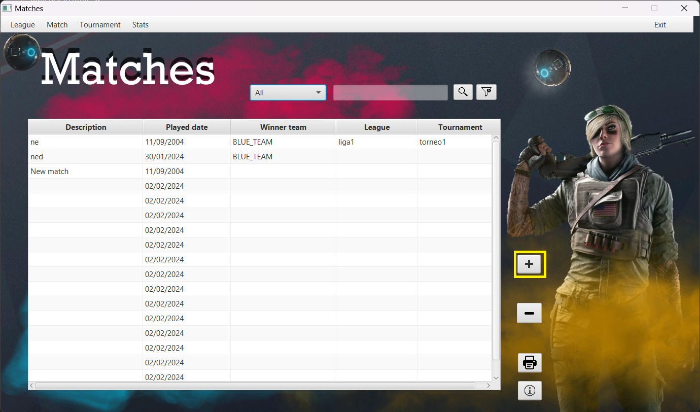

Matches Window User Manual
Introduction
Welcome to the Matches Window User Help quide. This document provides essential information on how to use and
navigate through the Matches Window in your application.
Table of Contents
- Getting Started
- Navigating the Matches Window
- Buttons
- Edits
- Reports
1. Getting Started
The Matches Window is a central hub where you can view and interact with match-related information. To get
started, follow these steps:
- Log in to your application.
- Navigate to the Matches Window using the provided menu or interface.
2. Navigating the Matches Window
The Matches Window is designed to provide an intuitive and user-friendly experience. Here are some tips for
navigating through the window:
- Use the navigation bar to switch between different sections.
- Click on a specific match to view detailed information.
3. Buttons
Add matches

Clicking the highlighted button you will add a new row at the bottom of the table, all the cells will be null except from the date that it will automatically set to the current date
Delete matches
Clicking the highlighted button yoy will delete the row sellected with the mouse and it will ask you for a confirmation.
Combo box search button

When you click the "Search" button, the program focuses on the search button and checks what option you've chosen,
like "All," "Tournament," "League," etc. It then performs a search based on your selection. For instance, if you
choose "Tournament," it looks for matches associated with the tournament's name. Results are displayed in a user-friendly
format, possibly a table. The code also handles potential issues, such as no matches found or server problems, and
shows error messages to guide you. You can also remove the previous selected filters with the right button
4. Edits
-
Description Edit:
- Click on the description cell of the match you want to edit.
- Enter the new description and press Enter.
- The system will check if the new description already exists. If not, the match's description will be
updated. If there's an issue, an error message will guide you.
-
Winner Edit:
- Click on the winner cell of the match you want to edit.
- Select the new winner and press Enter.
- The system will update the match with the new winner. Any issues will be communicated through an error
alert.
-
Played Date Edit:
- Click on the played date cell of the match you want to edit.
- Enter the new date and press Enter.
- The system will update the match with the new date. If there's an issue, an error message will be
displayed. If you cancel the edit without providing a valid date, you'll be prompted to enter
one.
-
League Edit:
- Click on the league cell of the match you want to edit.
- Enter the new league name and press Enter.
- The system will find the league by name and update the match accordingly. If there's an issue (e.g.,
league not found), an error alert will guide you.
-
Tournament Edit:
- Click on the tournament cell of the match you want to edit.
- Enter the new tournament name and press Enter.
- The system will find the tournament by name and update the match accordingly. If there's an issue (e.g.,
tournament not found), an error alert will guide you.
Finalizing Edits
After editing, the table will automatically refresh to reflect the updated information. Keep an eye out for any
error alerts, and refer to this manual if you encounter issues during the editing process. Happy editing!
5. Reports
Generates a report with all the visible data in the table